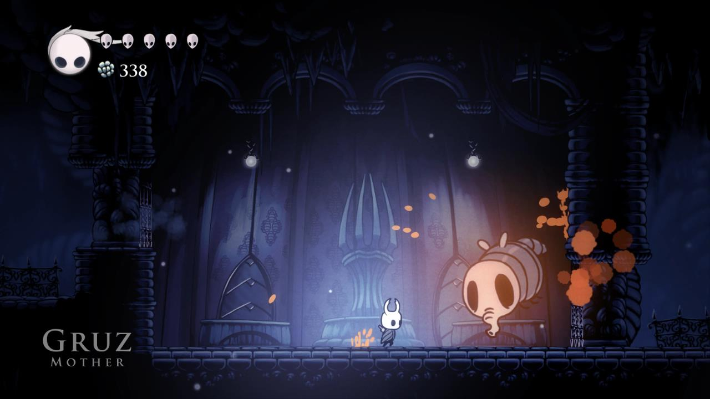
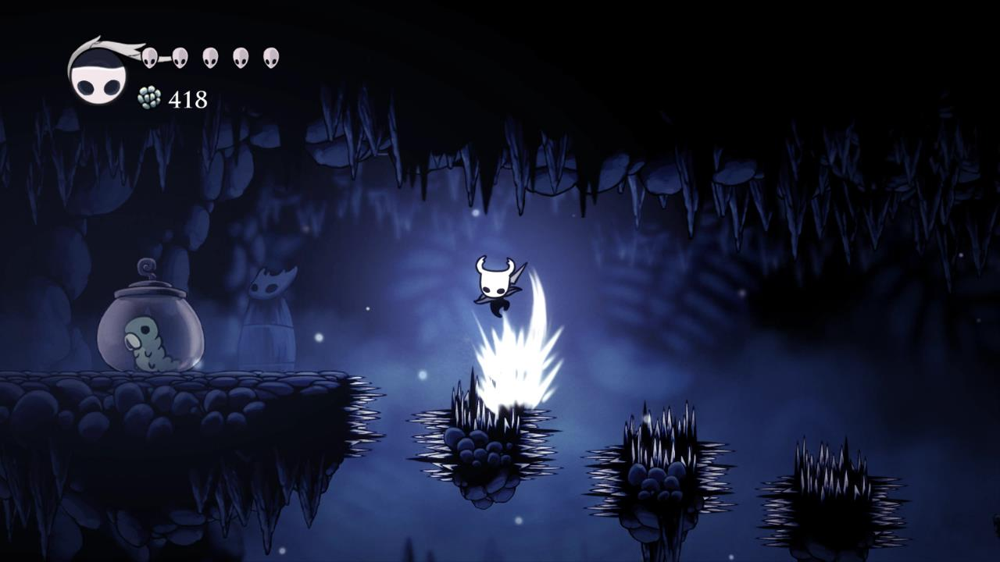
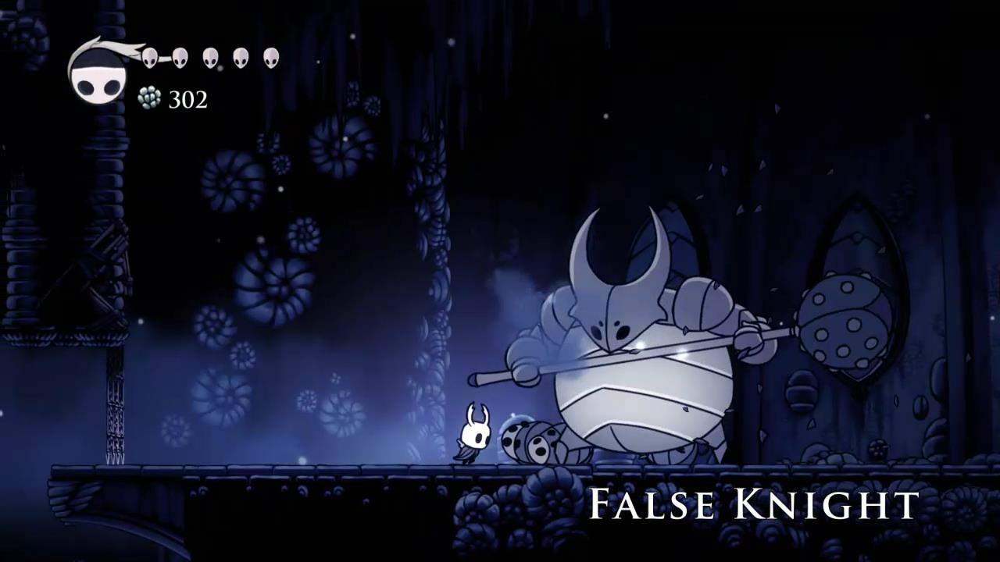

Forgotten Crossroads
Mouse over the map to zoom!
When you first drop down the well head across to the right. There’s a
Temple of the Black Egg here and you can meet Quirrel inside but
there’s nothing else to do for the moment. Leave the temple and
continue to the right.
Keep following the path to the right
until you come to a large bug with a bat. He has two strikes. A smash
and a shockwave. Retreat backwards when he smashes and run in for a
single strike before running back again. Jump over any shockwaves.
He’ll take about a dozen hits before dying.When he’s been killed hit
the glass jar with the Grub in it to rescue him.
Return to the left, take the first drop down and continue to the left. As you continue to the left you’ll see another Grub in a jar. You can’t rescue this one yet because he’s too high up. You’ll have to come back for him later. When you get to the hub drop all the way to the bottom. Drop down again and follow the humming to the left to meet the Map Maker, Cornifer.
You’ll meet the map maker in each new area and will have to meet him before the map of that area will become available. Drop down and continue to the left, dodging the large spiked creatures and hopping over the dangerous water. Eventually you’ll come to the second Grub. Break the jar to rescue him as well.
Drop down to the right and continue to the right to find the hot
springs and a bench. When you’ve taken a rest walk back to the left
and drop down to a room where the gates will close shut when you
enter. You’ll be attacked by a little bee and then two more bees
before the gates will open again.
Take the bottom path to the left first for 3 Geo Clusters, then head
back and go through the bottom right path. Continue to the right past
the spiked creatures. There’s a path going up on the next screen but
continue to the right. You’ll see a Stag sign pointing up to the
right. You’ll get to that later.
For now drop all the way down and continue to the right. Along the way
you’ll see a Soul Totem that you can hit to replenish your soul.
Continue to the right until you come to the mini-boss, the Gruz
Mother.
Gruz Mother Boss

She has two attacks, a darting attack where she flies straight at you
and a fast bouncing attack. She’s pretty slow so you should be able to
defeat her without too much trouble. Once she’s dead lots of small
Gruz will break out of her. Kill them all and the gates will open.
Drop down to the right. There’s a little shopkeeper on a ledge to the
right and a bench. The Shopkeeper is called Salubra and sells a number
of charms and charm nothces. You can’t reach her yet so walk to the
left to find a little house. Enter and speak with the little creature
called Sly. After you meet him he’ll open a little shop back at
Dartmouth.
Climb up the rock platforms to the left and head back to the right to the area before the Gruz Mother. Jump up through the exit to the top.
Jump up the rock platforms, taking out the large bees along the way. Ignore the station sign to the right for now. About half way up drop down the passage to the left. Practice your downward parry strikes because you’ll need them to rescue the next Grub. Jump across the spikes and break the jar containing to rescue it.
Go back to the tall room with the rock ledges and continue to the top.
There’s a Geo Cluster to the right if you want to risk the spikes,
otherwise continue to the left.
The next two bugs have nails and shields. They’re most vulnerable from
strikes from above.
Walk to the left, jump up to the ledge to the left and break through
the wall to find 2 bees and the next Grub.Climb up to the top of the
room and hit the switch to open the two gates above. Don’t go through,
this just open a shortcut that you can use later.
Drop down once more. The passage to the left just under where you
found the grub. Drop down to the next passage down to the left which
leads to the fast travel system. Rest at the bench and pay the fee to
activate the Stag Station. You can hit the bell to call the Stag and
then travel between locations that have already been opened up. Now
might be a good time to head back to Dirtmouth and purchase the
Compass and Quill.
From the Stag head back to the right and then up through the passage
above to the left which leads to the boss. Kill the large bug with the
club and continue to the left. Head up and then continue to the left
to the boss arena. Kill the little bugs and once you reach the left
side of the arena the boss will appear.
False Knight Boss

The False Knight is quite slow but he does have a few different
attacks. He smashes his mace down towards the ground, smashes the mace
and creates a shockwave and jumps towards you smashing his mace down
to the ground.
When he jumps you can run under him to the other side. After about 10
hits he’ll fall down, giving you a chance to hit his head and
replenish your soul. After a few seconds he’ll stand back up again.
This time he’ll add a new attack, a rapid strike from left to right
that also brings part of the ceiling down. Dodge the rocks and wait
for him to finish.
Once the False Knight has fallen three times hit him a few more times
and he’ll smash the central area of the floor and fall down dead. Drop
down after him, hit his head one last time and pick up the City Crest.